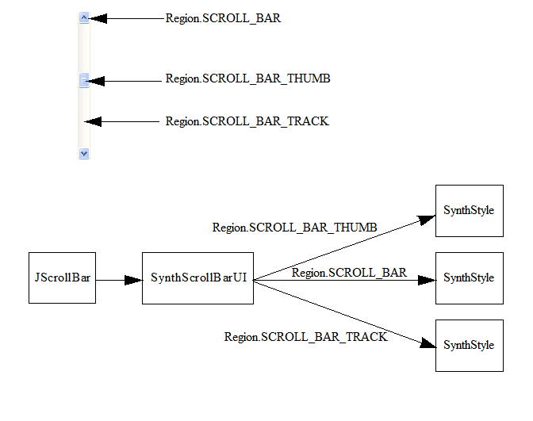
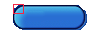

Lección: Modificando la Apariencia
La Apariencia Synth
Crear un Aspecto personalizado, o modificar uno existente, puede ser una tarea desalentadora. El paquete
javax.swing.plaf.synth
puede ser uado para crear un aspecto personalizado con mucho menos esfuerzo. Puede crear una
aspecto Synth o de forma programada o a través del uso de un fichero XML externo. El siguiente debate está
dedicado a la creación de un estilo Synth utilizando un archivo XML externo. Crear un aspecto Synth de
forma programada está desdcrito en la documentación de la IPA.
Con el Aspecto Synth, proporcionas el "aspecto" y Synth proporciona la "sensación".Así, puede pensar del Aspecto Synth como una "piel.".
La Arquitectura Synth
Recuerde del tema anterior que es la responsabilidad de cada Aspecto suministrar una implementación concreta
de cada una de las muchas subclases ComponentUI definidas por Swing. El aspecto Synth se encarga
de esto por tí. Para usar Synth, no necesita crear ningún ComponentUIs—más bien, solo
necesita especificar cómo se pinta cada componente, junto con varias propiedades que afectan el diseño y el
tamaño.
Synth opera a un nivel más granular que un componente — este nivel granular se llama una
"region." Cada componente tiene una o más regiones. Muchso componentes tienen solo una región, tal
como JButton. Otros tienen múltiples regiones, tales como JScrollBar. Cada uno de los
ComponentUIs suministrados por Synth asocian un SynthStyle con cada una de las
regiones definidas por el ComponentUI. Por ejemplo, Synth define tres regiones para
JScrollBar: la pista, el selector y la barra de desplazamiento en sí. La implementación de
ScrollBarUI (la subclase ComponentUI definida para JScrollBar) para
Synth asocia un SynthStyle con cada una de estas regiones.

SynthStyle suministra la información de estilo usada por la implementación ComponentUI
de Synth. Por ejemplo, SynthStyle define el color de primer plano y de fondo, la información de la
fuente,
defines the foreground and background color, font information, etcétera. Además, cada SynthStyle
tiene un SynthPainter que se usa para pintar la región. Por ejemplo, SynthPainter
define los dos métodos paintScrollBarThumbBackground y paintScrollBarThumbBorder, los
cuales se usan para pintar las regiones de la barra de desplazamiento y el selector.
Cada uno de los ComponentUIs en Synth obtienen un SynthStyles usando una
SynthStyleFactory. Hay dos formas de definir una SynthStyleFactory: a través de un
fichero de XML de Synth, entre bastidores esto crea una implementación de SynthStyleFactory que
termina publicada con los SynthStyles del fichero XML:
SynthLookAndFeel laf = new SynthLookAndFeel();
laf.load(MyClass.class.getResourceAsStream("laf.xml"), MyClass.class);
UIManager.setLookAndFeel(laf);
La ruta programática implica la creación de una implementación de SynthStyleFactory que devuelve
SynthStyles. El código siguiente crea una SynthStyleFactory personalizada que devuelve
SynthStyles distintos para los botones y los árboles:
class MyStyleFactory extends SynthStyleFactory {
public SynthStyle getStyle(JComponent c, Region id) {
if (id == Region.BUTTON) {
return buttonStyle;
}
else if (id == Region.TREE) {
return treeStyle;
}
return defaultStyle;
}
}
SynthLookAndFeel laf = new SynthLookAndFeel();
UIManager.setLookAndFeel(laf);
SynthLookAndFeel.setStyleFactory(new MyStyleFactory());
El Fichero XML
Una explicación del DTD para el fichero XML de Synth puede encontrase en
javax.swing.plaf.synth/doc-files/synthFileFormat.html.
Cuando cargas un Aspecto Synth, sólo aquellos componentes del IGU (o regiones) para los cuales hay una definición (un "estilo" enlazado a la región, como se describe dejabo) son renderizados. No hay comportamiento por defecto para cualquieer componente — sin definiciones de estilo en el fichero XML de Synth, el IGU es un lienzo en blanco.
Para especificar el renderizado de un componente (o región). su fichero XML debe contener un elemento <style>, el cual es entonces enganchado a la región usando el elemento <bind>. Como un ejemplo, definimos un estilo que incluya la fuente, color de primer plano, y color de fondo, y entonces enlace ese estilo a todos los componentes. Es una buena idea incluir dicho elemento en su archivo Synth XML mientras lo está desarrollando — después, cualquier componente que no haya definido tendrá al menos colores y una fuente:
<synth>
<style id="basicStyle">
<font name="Verdana" size="16"/>
<state>
<color value="WHITE" type="BACKGROUND"/>
<color value="BLACK" type="FOREGROUND"/>
</state>
</style>
<bind style="basicStyle" type="region" key=".*"/>
</synth>
Analizemos esta definición de estilo:
-
El elemento <style> es el bloque básico de construcción del fichero XML de Synth. Contiene toda la información necesitada para describir el renderizado de una región. Un elemento <style> puede describir más de una región, como se ha hecho aquí. En general, sin embargo, es mejor crear un elemento <style> para cada componente o región. Tenga en cuenta que al elemento <style> se le asigna un identificador, la cadena "basicStyle". Este identificador se usará más adelante en el elemento <bind>.
-
El elemento <font> del elemento <style> establece la fuenta a Verdana, tamaño 16.
-
El elemento <state> del elemento <style> será descrito abajo. El elemento <state> de una región puede ser uno, o una mezca, de siete posibles valores. Cuando el valor no se especifica, la definición aplica a todos los estados, lo que es la intención aquí. Por lo tanto, los colores de fondo y primer plano "para todos los estados" se definen en este elemento.
-
Finalmente, el elemento <style> con el identificador "basicStyle" que acaba de ser definido está ligado a todas las regiones. El elemento <bind> enlaza "basicStyle" a los tipos "region". A qué tipo de región se aplica la vinculación está dado por el atributo "clave", que es ".*". En este caso, la expresión regular para "todas".
Miremos las piezas del archivo Synth XML antes de crear algunos ejemplos de trabajo. Empezaremos con el elemento <bind>, mostrando como un <style> dado se aplica a un componente o región.
El Elemento <bind>
Cuando quiera que un elemento de <style> se define, debe estar ligado a uno o más componentes o regiones antes de qie este tenga un efecto. El elemento <bind> es usado para este propósito. Requiere tres atributos:
-
stylees el único identificador de un estilo definido previamente. -
typees otro "name" o "region." Sitypees un nombre, obtenga el nombre con el métodocomponent.getName(). Sitypees una region, use la constantes apropiada definida en la claseRegionen el paquetejavax.swing.plaf.synth. -
keyes una expresión regular usada para determinar a qué componentes o regiones está el estilo enlazado.
Una Region es una forma de identificar un componente o pate del componente. Las Regiones están basadas en las
constantes de la clase
Region
, modificadas al eliminar los guiones bajos:
Por ejemplo, para identificar la región SPLIT_PANE, usará SPLITPANE, splitpane, o SplitPane ( For example, to identify the SPLIT_PANE region you would use SPLITPANE, splitpane, or SplitPane (sin distinguir mayúsculas y minúsculas).
Cuando enlaza un estilo a una región, ese estilo será aplicado a todos los componentes en esa región. Pude enlazar un estilo a más de una región, y puede enlazar más de un estilo a una región. Por ejemplo.
<style id="styleOne">
<!-- La definición styleOne va aquí -->
</style>
<style id="styleTwo">
<!-- La definición styleTwo va aquí -->
</style>
<bind style="styleOne" type="region" key="Button"/>
<bind style="styleOne" type="region" key="RadioButton"/>
<bind style="styleOne" type="region" key="ArrowButton"/>
<bind style="styleTwo" type="region" key="ArrowButton"/>
Puede enlazar a componentes nombrados, individuales, ya sea que estén o no también enlazados como
regiones.Por ejemplo, suponga que quiere que los botones "OK" y "Cancelar" en su IGU sean
tratados de forma diferente que todos los otros botones.
Primero, debe de dar a los botones OK y Cancelar nombres, usando el método component.setName().
Entonces, definirá tres estilos: uno para botones en general (region = "Button"), uno para el botón
OK (name = "OK"), y uno para el botón Cancelar (name = "Cancelar"). Finalmente, enlazaría
estos estilos como aquí:
<bind style="styleButton" type="region" key="Button">
<bind style="styleOK" type="name" key="OK">
<bind style="styleCancel" type="name" key="Cancel">
Como resultado, el botón "Aceptar" está destinado a ambos "styleButton" y "styleOK" mientras que el botón "Cancelar" está destinado a ambos "styleButton " y "styleCancel."
Cuando un componente o región se enlaza a más de un estilo, los estilos son mezclados.
Nota:
Del mismo modo que un estilo puede vincularse a múltiples regiones o nombres, se pueden vincular varios estilos a una región o nombre. Estos estilos múltiples se fusionan para la región o el nombre. La precedencia se da a los estilos definidos más adelante en el archivo.
El Elemento <state>
El elemento <state> le permite definir un aspecto para un región que depende de su "estado".
Por ejemplo, usted usualmente querrá un botón que ha sido PRESIONADO que parezca diferente que
el botón que está en estado HABILITADO. Hay siete posibles valores para <state> que están
definidos en la DTD del XML de Synth. Estos son:
- ENABLED
- MOUSE_OVER
- PRESSED
- DISABLED
- FOCUSED
- SELECTED
- DEFAULT
Puede también tener estados compuestos, separados por ' y ' — por ejemplo, ENABLED y FOCUSED. Si no especifica un valor, el aspecto definido se aplicará a todos los estados.
Como un ejemplo, aquí hay un estilo que especifica pintadores por estado. Todos los botones son pintados de cierta forma, a menos que el estado sea "PRESIONADO," en cuyo caso son pintados de forma diferente:
<style id="buttonStyle">
<property key="Button.textShiftOffset" type="integer" value="1"/>
<insets top="10" left="10" right="10" bottom="10"/>
<state>
<imagePainter method="buttonBackground" path="images/button.png"
sourceInsets="10 10 10 10"/>
</state>
<state value="PRESSED">
<color value="#9BC3B1" type="BACKGROUND"/>
<imagePainter method="buttonBackground" path="images/button2.png"
sourceInsets="10 10 10 10"/>
</state>
</style>
<bind style="buttonStyle" type="region" key="Button"/>
Ignorando los elementos <property> y <insets> por el momento, puede ver que un botón presionado se pinta diferentemente que un botón no presionado.
El valor <state> que se usa es el estado definido que más estrechamente coincide con el estado de la región. La coincidencia se determina por el número de valores que coinciden el estado de la región. Si ninguno de los valores de estado coinciden, entonces el estado sin valor es usado. Si hay coincidencias, el estado con las coincidencias más individuales. Por ejemplo, el código siguiente definie tres estados:
<state id="zero">
<color value="RED" type="BACKGROUND"/>
</state>
<state value="SELECTED and PRESSED" id="one">
<color value="RED" type="BACKGROUND"/>
</state>
<state value="SELECTED" id="two">
<color value="BLUE" type="BACKGROUND"/>
</state>
Si el estado de la región contiene al menos SELECTED y PRESSED, será elegido el estado uno. Si el estado contiene SELECTED, pero no contiene PRESSED, será usado el estado dos. Si el estado no contiene ni SELECTED ni PRESSED, será usado el estado cero.
Cuando el estado actual coincide con el mismo número de valores para las dos definiciones de estado, el que es
usado es el primero definido en el estilo. Por ejemplo, el estado MOUSE_OVER es siempre verdadero
en un botón PRESSED (no puede presionar un botón a menos que el ratón esté sobre él). Así, si el
estado MOUSE_OVER es declarado primero, siemprer será elegido sobre PRESSED, y
cualquier pintado definido para PRESSED no será hecho.
<state value="PRESSED">
<imagePainter method="buttonBackground" path="images/button_press.png"
sourceInsets="9 10 9 10" />
<color type="TEXT_FOREGROUND" value="#FFFFFF"/>
</state>
<state value="MOUSE_OVER">
<imagePainter method="buttonBackground" path="images/button_on.png"
sourceInsets="10 10 10 10" />
<color type="TEXT_FOREGROUND" value="#FFFFFF"/>
</state>
El código de arriba funcionará adecuadamente. Sin embargo, si invierte el orden de los estados
MOUSE_OVER y PRESSED en el fichero, el estado PRESSED nunca será usado.
Esto es porque cualquier estado que sea el estado PRESSED es también un estado
MOUSE_OVER. Ya que el estado MOUSE_OVER fue definido primero, es el que será usado.
Colores y Fuentes
El elemento <color> requiere dos atributos:
-
valuepuede ser cualquiera de las constantesjava.awt.Color, tales como RED, WHITE, BLACK, BLUE, etc. Puede también ser una representación hexadecimal de valores RGB, tales como #FF00FF o #326A3B. -
typedescribe dónde se aplica el color — puede ser BACKGROUND, FOREGROUND, FOCUS, TEXT_BACKGROUND, o TEXT_FOREGROUND.
Por ejemplo:
<style id="basicStyle">
<state>
<color value="WHITE" type="BACKGROUND"/>
<color value="BLACK" type="FOREGROUND"/>
</state>
</style>
El elemento <font> tiene tres atributos:
-
name— el nombre de la fuente. Por ejemplo, Arial o Verdana. -
size— el tamaño de la fuente en pixels. -
style(opcional) — BOLD, ITALIC, o BOLD ITALIC. Si se omite, obtiene una fuente normal.
Por ejemplo:
<style id="basicStyle">
<font name="Verdana" size="16"/>
</style>
Cada uno de los elementos <color> y el elemento <font> tiene un uso alternativo. Cada uno puede
tener un atributo id o un atributo idref. Usando el atributo id, puede
definir un color que puede reusar más tarde usando el atributo idref. Por ejemplo,
<color id="backColor" value="WHITE" type="BACKGROUND"/>
<font id="textFont" name="Verdana" size="16"/>
...
...
...
<color idref="backColor"/>
<font idref="textFont"/>
Inserciones
Las inserciones se agregan al tamaño de un componente mientras se dibujan. Por ejemplo, sin
inserciones, un botón con un título de Cancelar será simplemente los bastante grande para
contener el título en la fuente elegida. Con un elemento <insets> como este
<insets top="15" left="20" right="20" bottom="15"/>,
el botón será hecho más grande en 15 pixels por encima y debajo del título y 20 pixels a la izquierda y derecha del título.
Pintar Con Imágenes
El formato del fichero de Synth permite personalizar el pintado a través de imágenes. El pintor de imagen de
Synth divide una imagen en nueve áreas distintas: arriba, arriba a la derecha, derecha, abajo a la derecha,
abajo, abajo a la izquierda, izquierda, arriba a la izquierda, y centro. Cada una de estas áreas es pintada en
el destino. Los bordes superior, izquierdo, inferior y derecho están embaldosados o estirados, mientras que
las porciones de esquina (sourceInsets) permanecen fijas.
Nota:
No hay relación etre el elemento <insets> y el atributo sourceInsets. El elemento
<insets> define el espacio ocupado por una región, mientras los atributos sourceInsets
definen como pintar una imagen. Los <insets> y sourceInsets serán a menudo similares,
pero no necesitan serlo.
Puede especificar si el área del centro será pintado con el atributo paintCenter. La siguiente
imagen muestra las nueve áreas:

Creemos un botón como un ejemplo. Para hacer esto podemos usar la siguiente imagen (mostrada más grande que su tamaño real):

La caja roja en la esquina superior izquierda es un cuadrado de 10 pixeles (incluyendo el borde de la caja)
— muestra la región de la esquina que no debería estirarse cuando se pinte. Para conseguir esto, los
sourceInsets de arriba y de la izquierda deberán ser establecidos a 10. Usaremos el siguiente
estilo y asociación:
<style id="buttonStyle">
<insets top="15" left="20" right="20" bottom="15"/>
<state>
<imagePainter method="buttonBackground" path="images/button.png"
sourceInsets="10 10 10 10"/>
</state>
</style>
<bind style="buttonStyle" type="region" key="button"/>
Las líneas dentro del elemento <state> especifican que los fondos de los botones deberán ser pintados
usando la imagen images/button.png. Esa ruta es relativa a la Clase que es pasada al método load
del aspecto SynthLookAndFeel. El atributo sourceInsets especifica las áreas de la imagen que no
deben ser estiradas. En este caso las inserciones de arriba, izquierda, abajo, y derecha tienen cada una 10.
Esto causará que el pintor no estire un área de 10x10 en cada esquina de la imagen.
El <bind> asocia buttonStyle a todos los botones.
El elemento <imagePainter> suministra toda la información necesitada para representar una parte de una región. Requiere sólo unos pocos atributos:
-
method — este especifica cual de los métodos en la clase
javax.swing.plaf.synth.SynthPainterva a ser usado para pintar. La claseSynthPaintercontiene sobre 100 métodos que empiezan conpaint. Cuando determine cual necesita, borre el prefijopaint, cambien la primera letra que quede a minúsculas, y use el resultado como el atributo demethod. Por ejemplo, el método deSynthPainterpaintButtonBackgroundse convierte en el atributobuttonBackground. -
path — la ruta a la imagen que es utilizada, relativa a la Clase que es pasada en el método load de SynthLookAndFeel.
-
sourceInsets — las inserciones en pixels, representando el ancho y alto de las áreas de las esquinas que no deben ser estiradas. Se asignan a arriba, izquierda, abajo, y derecha, en ese orden.
-
paintCenter (opcional) : Este atributo le permite mantener el centro de una imagen o deshacerse de ella (en un campo de texto, por ejemplo, de forma que el texto pueda ser dibujado).
El listado de abajo muestra el código XML para cargar diferentes imágenes dependiendo del <state> del botón
<style id="buttonStyle">
<property key="Button.textShiftOffset" type="integer" value="1"/>
<insets top="15" left="20" right="20" bottom="15"/>
<state>
<imagePainter method="buttonBackground" path="images/button.png"
sourceInsets="10 10 10 10"/>
</state>
<state value="PRESSED">
<imagePainter method="buttonBackground" path="images/button2.png"
sourceInsets="10 10 10 10"/>
</state>
</style>
<bind style="buttonStyle" type="region" key="button"/>
button2.png muesra la versión pulsada de button.png, desplazado un pixel a la derecha. La línea
<property key="Button.textShiftOffset" type="integer" value="1"/>
desplaza el texto del botón en consecuencia, como se describe en la siguiente sección.
El Elemento <property>
Los elementos <property> son usados para añadir pares clave valor a un elemento <style>. Muchos componentes usan los pares clave valor para configurar su apariencia visual.
El elemento <property> tiene tres atributos:
-
key— el nombre de la propiedad. -
type— el tipo de dato de la propiedad. -
value— el valor de la propiedad.
Hay una propiedad table(componentProperties.html) que lista las propiedades que cada componente
soporta:
javax/swing/plaf/synth/doc-files/componentProperties.html
.
Ya que la imagen button2.png desplaza el botón visual un pixel cuando es pulsado, desplazaremos también el texto del botón. Hay una propiedad del botón que hace esto:
<property key="Button.textShiftOffset" type="integer" value="1"/>
Un Ejemplo
Aquí tiene un ejemplo, usando el estilo del botón definido arriba. El estilo del botón, mas un
"estilo de fondo" con definiciones de la fuente y colores que están asociadas a todas las regiones
(similar al "basicStyle" mostrado en la sección titulada "El Fichero XML," arriba) son
combinados en
buttonSkin.xml
Aquí tiene un listado de buttonSkin.xml:
<!-- piel de Synth que incluye una imagen para botones -->
<synth>
<!-- Estilo que todas las regiones usarán -->
<style id="backingStyle">
<!-- Hace que todas las regiones que usan esta piel opacas-->
<opaque value="TRUE"/>
<font name="Dialog" size="12"/>
<state>
<!-- Suministra colores por defecto -->
<color value="#9BC3B1" type="BACKGROUND"/>
<color value="RED" type="FOREGROUND"/>
</state>
</style>
<bind style="backingStyle" type="region" key=".*"/>
<style id="buttonStyle">
<!-- Desplaza el texto un pixel cuando es presionado -->
<property key="Button.textShiftOffset" type="integer" value="1"/>
<insets top="15" left="20" right="20" bottom="15"/>
<state>
<imagePainter method="buttonBackground" path="images/button.png"
sourceInsets="10 10 10 10"/>
</state>
<state value="PRESSED">
<imagePainter method="buttonBackground" path="images/button2.png"
sourceInsets="10 10 10 10"/>
</state>
</style>
<!-- Asocia buttonStyle a todos los JButtons -->
<bind style="buttonStyle" type="region" key="button"/>
</synth>
Podemos cargar este fichero XML para usar el aspecto Synth para una aplicación simple llamada
SynthApplication.java. El IGU para esta aplicación incluye un botón y una etiqueta. Cada vez que
el botón es pulsado, la etiqueta se incrementa.
Nota:
La etiqueta se dibuja, incluso aunque buttonSkin.xml no contiene un estilo para ella. Esto es
porque hay un "backingStyle" general que incluye una fuente y colores.
Aquí está el listado del fichero
SynthApplication.java
.
Intente esto:
Pulsa el botón Lanzar para ejecutar el ejemplo SynthApplication usando Java™ Web Start ( descargue el KDD 7 o posterior). Alternativamente, para compilar y ejecutar el ejemplo usted mismo, consulte el índice de ejemplos.
Pintar Con Iconos
Los botones de radio y las casillas de verificación representan típicamente su estado con iconos de tamaño
fijado. Para estos, puede crear un icono y asociarlo a la propiedad apropiada (refíerase a la tabla de
propiedades,
javax/swing/plaf/synth/doc-files/componentProperties.html
). Por ejemplo, para pintar botones de radio que son seleccionados o deseleccionados, use este código:
<style id="radioButton">
<imageIcon id="radio_off" path="images/radio_button_off.png"/>
<imageIcon id="radio_on" path="images/radio_button_on.png"/>
<property key="RadioButton.icon" value="radio_off"/>
<state value="SELECTED">
<property key="RadioButton.icon" value="radio_on"/>
</state>
</style>
<bind style="radioButton" type="region" key="RadioButton"/>
Pintores Personalizados
El formato de fichero de Synth permite embeber objetos arbitrarios a través de la
persistencia a largo plazo de los componentes de JavaBeans
. Esta capacidad es particularmente útil para proporcionar sus propios pintores más allá de los basados en
imágenes que Synth proporciona. Por ejemplo, el código XML siguiente especifica que un gradiente debe ser
representado en el fondo de los campos de texto:
<synth>
<object id="gradient" class="GradientPainter"/>
<style id="textfield">
<painter method="textFieldBackground" idref="gradient"/>
</style>
<bind style="textfield" type="region" key="textfield"/>
</synth>
Donde la clase GradientPainter se ve así:
public class GradientPainter extends SynthPainter {
public void paintTextFieldBackground(SynthContext context,
Graphics g, int x, int y,
int w, int h) {
// Por simplicidad esto siempre recrea el GradientPaint. En una
// aplicación real usted cacheará esto para evitar la basura.
Graphics2D g2 = (Graphics2D)g;
g2.setPaint(new GradientPaint((float)x, (float)y, Color.WHITE,
(float)(x + w), (float)(y + h), Color.RED));
g2.fillRect(x, y, w, h);
g2.setPaint(null);
}
}
Conclusión
En esta lección, hemos cubierto el uso del paquete javax.swing.plaf.synth para crear un aspecto
personalizado. El énfasis de esta lección ha sido el usar un fichero XML externo para definir el aspecto.
La lección siguiente presenta una aplicación de ejemplo que crea un cuadro de diálogo de búsqueda usando el
marco de trabajo Synth con un fichero XML.